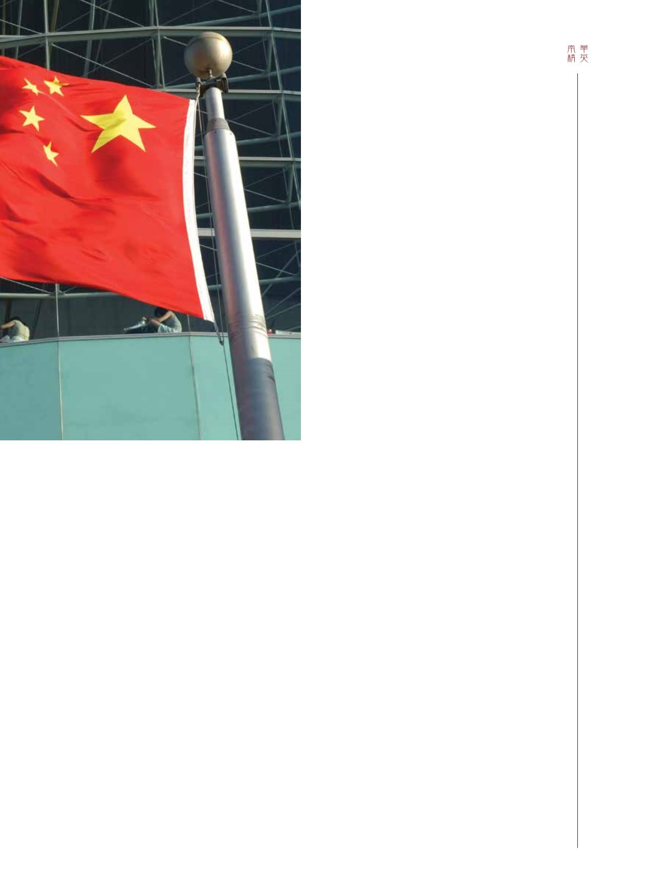

51 / 116
51 / 116


51
中國創新能力如何？
平心而言，中國的創新領域近年來取得驚人的發展，這
有賴中央政府鼓勵創新實驗室發展，為企業尋找創新方案，
亦顯然是經濟增長和發展的基石。在深入了解文化的基礎
上，籍著持續推動此過程支持不同組織內部的創新，將有助
加速創新這關鍵要素。
比如說，以色列的企業總是在推出新產品。對發展經
濟而言，這是全方位全天候的機會。無論是研發以色列的安
全系統、台灣的電子遊戲或三藩市灣區的新科技，我們均須
提醒自己眼前的選擇是極為明確的——要麽創新，要麽被淘
汰。
未來10年，隨著更多中國品牌成為家喻戶曉的名字，中
國的創新能力會變得愈來愈容易預測。簡而言之，中國所面
對的挑戰，在於其如何創新。
在這議題上，以色列的思維則完全不同。以色列的出發
點，是「我們被鄰國包圍，必須創新才能生存」。這顯然關
乎勇氣、風險及採取主動的問題——君不見以色列有多少企
業在美國納斯達克交易所上市？凡此種種，均源於領導管理
層面，即管理和決策的方式、完成項目所需的時間，以及營
銷產品所需的額外時間。以色列文化支持創新、競爭力和內
部合作。這對我們而言，豈不值得學習？
這與香港的創新能力有何關係？
在香港企業的任何部門，每天總有人說「我們只是微不
足道的小僱員而已」，或「我不能將自己的真實想法告訴大
老闆」云云。
在大多數情況下，創意靈感總是首先經過資深員工過
濾，再由傾向過度保護的行政人員審查，然後是高級行政人
員審視，最後才送達主管審閱。如果該主管與其它主管或秘
書的關係欠佳，創意靈感將到此為止。
以列車為例，所有車廂總是由最前方的機車拉動，這正
是香港的情況。以色列的模式，是讓個人擁有自己的機車，
然後匯集在一起。當然，任何組織均須設有正式和非正式的
架構，但在參與方面，以色列的模式鼓勵個人參與，從而在
個人層面轉化為文化及激情。因此，就成果而言，在政治框
架內運作的組織，總是不及以「成績」為主導的組織。
How does that relate to the ability to
innovate in Hong Kong?
In any sector in Hong Kong on any given day, one
can hear people saying, “I am only a small potato” or, “I
can’t tell Big Boss what I really think.”
Typically, innovative ideas are going to be
filtered by more senior staff, then reviewed by senior
executives with unnecessary intervention by protective
administrative staff. It then goes up for scrutiny by
a Director and if the Director doesn’t have a good
relationship with another Director or Secretary, then
“POOF” – there goes your idea up in smoke.
Take the example of a train. A single locomotive
pulls an entire train of carriages and in Hong Kong they
all follow behind one locomotive. In the Israeli model,
everyone has their own locomotive and are all pulling
together. Of course, in any organization there has to be
formal and informal organizational structures, but in
terms of involvement it becomes a culture and a passion at
an individual level for all to be encouraged to participate.
Hence, those organizations that operate mostly within a
political frame obviously do not have the same results as
those focused to operate in the “outcome” frame.